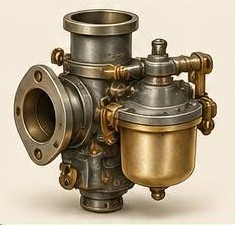

Bánki Donát (1859 – 1922) gépészmérnök és egyetemi tanár, Csonka János (1852 – 1939) pedig autodidakta gépész és feltaláló volt. Közösen megalkották a porlasztót, amelyet 1893-ban szabadalmaztattak.
A porlasztó a benzint finom cseppekre porlasztja szét és levegővel keveri, így a motor egyenletesen tud működni. Ez a megoldás évtizedekig a benzinmotorok alapvető része volt.
← Vissza a főoldalra